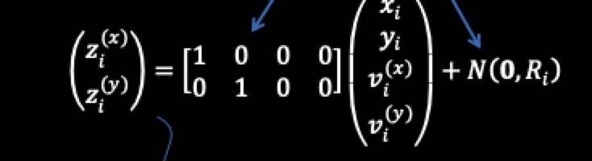
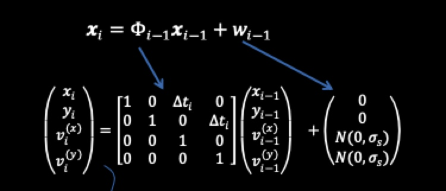
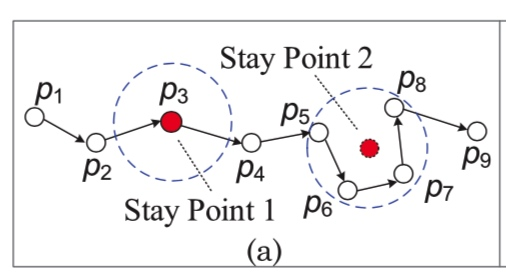
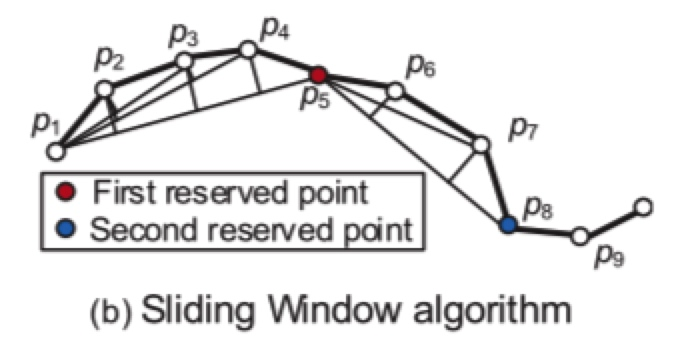

0.综述

首先是关于整个轨迹数据涉及的存储、数据清洗、分析、挖掘的一个整体模块。
1 trajectory preprocessing
GPS点漂移问题
http://www.xml-data.org/CHDLXX/html/62356297-1a5a-4b3f-bb57-547e9a401da0.htm
2 trajectory data management
2.1 trajectory indexing和retrieval
常见的检索类型有：
(1) range 检索： 检索在指定空间或时间内的轨迹
(2) KNN 检索：找到和指定轨迹或者点最近的k条轨迹
检索涉及到数据存储形式，可以看下原文，这里不细说了。
一般都是采用专门的GIS数据库进行存储和管理。
2.2 trajectory的距离/相似性
详见 2 轨迹相似性度量
3.uncertainty in a trajectory
(1) 减少不确定性
多条不确定性的路线合并=> 相对确定性的路线
(2) 将空间进行grids划分，将原本的轨迹点重新归属到新的单元格中，简化轨迹
4. trajectory pattern mining
(1) moving together patterns
move together pattern 主要是找到一组在一定时间内共同移动的物体。一般都是通过基于密度聚类的方法。
Jensen[2007] Continuous clustering of moving objects扩展了这种方法，使得在原来的距离的基础上增加了移动的方向、角度等因素。
(2) trajectory clustering
根据前面的关于轨迹距离/相似度的定义，可以对轨迹进行聚类。在这之前一般都需要对轨迹数据进行一步的处理，比如切分segment。
（3）mining sequential patterns
进行子序列模式挖掘，首先要定义序列中的location，即将(x,y)转为一个有标识性的概念，比如一个地点。方法：
- line simplification based 方法：比如先用DP方法识别出来key points。然后对每个轨迹的segment为一个item进行模式挖掘
- cluster based： 先把轨迹上的点，聚类到regions of interest，然后每条轨迹就可以用这些“关键点”来表示。
(4) periodical patterns
5. trajectory classification
一般来说，一个轨迹分类的过程大概是
(1)将轨迹切分成segment
(2) 提取特征
(3) 建立模型： As a trajectory is essentially a sequence, we can leverage existing sequence inference models, such as Dynamic Bayesian Network (DBN), HMM, and Conditional Random Field (CRF)
==> 可以看看相关论文
6. 轨迹异常检测
7.把轨迹转成其他的形式
(1) graph
- travel recommendation, 旅游的stay points, 然后研究图的联通，最大流之类的问题
- 计算user similarity。 通过更细粒度的停留点，以停留点为单位，每个人的轨迹就可以用停留点来刻画，即user1= (place1, place2, place3), user2 = (place1', place2', place3', place4')。然后可以进行user之间的相似度度量。
(2) matrix
可以做travel recommendation。 比如 user-location矩阵，zheng[2010b]提出了一个coupled-MF的方法。构造了一个location-activity矩阵。
(3) tensor
user-location-activity。作者介绍了一种分解方法
8.常用的轨迹数据集
public trajectory dataset
—GeoLife Trajectory Dataset [GeoLife Data]
—T-Drive Taxi Trajectories [T-Drive Data]
—GPS Trajectory with Transportation Labels
—Check-in Data from Location-based Social Networks [User check-in data]
—Hurricane Trajectories [Hurricane trajectory (HURDAT)]
—The Greek Truck Trajectories [The Greek Trucks Dataset]
—Movebank Animal Tracking Data [Movebank data]
基于轨迹特征的挖掘应用
轨迹数据应用案例
https://www.jianshu.com/p/e78016feda12
一个挖掘案例
https://github.com/haicg/datamining-geolife-with-python
https://github.com/jbremz/Beijing-Trajectories-Project
这个项目本身是个分类的项目，通过各种轨迹特征来判断交通方式。其中有很多关于轨迹特征指标的设计可以借鉴(比如角度、面积。。。)
数据来源，微软GeoLife GPS Trajectories项目，https://www.microsoft.com/en-us/research/publication/geolife-gps-trajectory-dataset-user-guide/
https://chuansongme.com/n/1884212353776
研究paper：
Trajectory Clustering: A Partition-and-Group Framework，Jae-Gil Lee, Jiawei Han，Kyu-Young Whang
参考资料
郑宇 https://www.microsoft.com/en-us/research/publication/trajectory-data-mining-an-overview/
1.trajectory preprocessing
- noise filtering
- stay point detect
- trajectory compression
- trajectory segmentation
1. nosie filtering
(1) 均值/ 中位数 平滑
一种简单的方法是使用一个均值滤波器来平滑噪声。对于测量到的点𝑧𝑖,对真正的点的估计是𝑧𝑖及其n-1个前驱的平均值.均值滤波器可以看作是一个滑动窗口,覆盖了𝑧𝑖 的时间相邻值.
(2) 卡尔曼滤波，粒子滤波
不光考虑轨迹(x,y), 还考虑了在x，y方向上的速度vx，vy。不考虑速度的相当于是

考虑速度的相当于是：

也就是

(3) 删除法
上面两种是对点进行估计，删除法是用异常点检查的方法找到异常点，然后直接删除。
一种方式就是计算从pi -> pj点的速度，超过一定阈值的认为是异常值。
2. stay point detect
停留点一般有两种情况：
- 单一点。一个人长时间驻足在一个点，这种情况相对较少
- 驻留区域，一个人长时间在一个小范围内活动

驻留点发掘后，可以将原来的轨迹(x,y,t) 数据 转为地点 (place, delta_t) 数据
停留点检测算法：
3. trajectory compression
轨迹压缩主要是为了在保证一定精度的条件下，减少数据的存储成本。
为了衡量压缩的损失，需要测度压缩后的轨迹与原始轨迹的距离度量。距离的度量有两种方式：
(1) 垂直距离
(2) 时间同步距离
比如下面的例子，将一条有12个点的轨迹压缩到3个点p1，p7，p12。 垂直距离就是直接做点到直线的垂线，而时间同步距离就是假设这个人在p1p7上是匀速行驶的，按照时间间隔为权重划分其他点对应的距离。

压缩方法大致分为两大类别：
(1) offline compression
即给定一条轨迹，需要生成一个一定误差范围内的近似轨迹。这个问题类似于line simplification问题。一个经典的算法就是 Douglas-Peucker
算法描述如下:
（1）在曲线首尾两点A，B之间连接一条直线AB，该直线为曲线的弦；
（2）得到曲线上离该直线段距离最大的点C，计算其与AB的距离d；
（3）比较该距离与预先给定的阈值threshold的大小，如果小于threshold，则该直线段作为曲线的近似，该段曲线处理完毕。
（4）如果距离大于阈值，则用C将曲线分为两段AC和BC，并分别对两段曲线进行1~3的处理。
（5）当所有曲线都处理完毕时，依次连接各个分割点形成的折线，即可以作为曲线的近似。
注意DP算法中需要计算点到直线的垂直距离，这里可以使用海伦公式。假设一个三角形三边长度分别是a,b,c，则其面积计算公式可写成
\(s=\sqrt{p(p-a)(p-b)(p-c)}\)， 其中\(p\)是半周长\(p=(a+b+c)/2\)
除了DP方法之外，还有
- TD-TR（Top-Down Time-Ratio）算法
DP是考虑的垂直距离，TDTR是考虑的时间同步距离， - Bellman算法
动态规划的方法
(2) online compression
online-compression，即数据会源源不断过来，无法提前预知轨迹点数。来了个新点之后决定是否保留的过程。方法大致有两大类
- window-based algorithm： sliding window algorithm，open window algorithm
滑动窗口：从p0开始，依次看p0pi的长度，如果没超过阈值则舍弃，否则将其纳入。比如下面例子中的p5是第一个超过阈值的，p5纳入后，再以p5为开始点继续进行。

开放窗口：滑动窗口是选择最后一个带来超过阈值的点作为新的起点，而开放窗口是选择线段内误差最大的点。
比如p5超过阈值后，看p2-p4这些点中到p1-p5直线的误差哪个最大，因此p3会被选上。
- 依赖物体移动的速度和方向
依据给定的一个阈值，以及上两次的位置，定义一个safe area，如果后续来的点在该safe area之内则认为是多余的被忽略。
compression with semantic meaning.
有些轨迹上是包含了用户的驻足点信息的，比如游览景区。这些点的信息量要比一般走路的信息量大。针对这种情况的压缩，chen[2009] 提出了一个TS(trajectory simplification)算法。既考虑整体的轨迹形状也考虑这些import points。
4. trajectory segmentation
轨迹切分主要是为了研究的方便。比如可以按照如下的方法进行切分：

这些切分需要结合实际的研究目的和场景。可以按照时间切分，转折点切分、驻留点切分。还有一些研究室研究人们乘坐交通工具的，可以按照乘坐方式分。
除此之外，还有基于轨迹点密度进行的轨迹分割：一般都基于密度聚类算法的改进算法来进行检测，如：K-中值算法，DJ-Cluster算法，cb_swot算法，MSN(Move-Stop-Noise)算法等。
5. map matching
这里也有很多研究，简单的说下，就是讲坐标点构成的路径和地图上的路线进行match。方法有geometric，概率建模的，以及其他的一些方法。
根据考虑的抽样点数，可以分为local/incremental 和global的方法。
参考
paper：郑宇2015. trajectory data mining: an overview
https://www.cnblogs.com/xueqiuqiu/p/7635516.html?utm_source=debugrun&utm_medium=referral
均值，中位数平滑，滤波器
知乎：https://zhuanlan.zhihu.com/p/51976835 应该是翻译的ppt
2 轨迹相似性度量
相似性度量方法
https://www.jianshu.com/p/8a5755c1831a
基于轨迹点的相似性度量方法：
全局匹配度量法
即两条轨迹要整体相似，每个点都要在另一条轨迹中找到对应点。常见的方法有：
- Euclid 欧式距离
- ERP 编辑距离
- DTW 动态时间扭曲方法。 对轨迹进行局部的拉伸或者缩放，从而可以对不同采样率和不同长度的轨迹进行比较，DWT距离就是所有最优匹配轨迹点间距离的累加和
局部匹配度量法
只要求两条轨迹部分相似，并且计算距离的时候只看匹配点之间的距离。常见的方法有
- EDR 编辑距离法。 将距离量化为0，1两个值来消除噪音。方法鲁棒性好，但是不满足距离的三角不等式
- LCSS 最长公共子序列
zzz: 对于轨迹数据，可以将(x,y,t) 做一个映射，映射到一个格子标号。即将(x,y) 对应到一个位置范围。在这个位置范围内相同出现的次数可以认为是两个轨迹的相似度度量。
而且实际情况中，在商场的环境下。用户浏览路线的宽度其实是可以没有限制的可以进行适当的放松，这个必须得结合真实的商场布局图来设计。
这样(x, y, t) => x_y的字符id
python实现 https://www.jianshu.com/p/d7b8db280a01
- Frechet 费累歇距离。人遛狗的狗绳距离
- KBCT：K-BCT是一个参数free的方法，结合了DTW和LCSS
- LCS,
- CATS
方法对比
| 方法 | 优缺点 | |
|---|---|---|
| 欧式距离 | x 采样率，轨迹点必须一致 | |
| DTW | 可以不同采样频率，不同长度； | |
| ERP | 可以不同采样频率，不同长度；不是所有的匹配点都计算距离，减少噪音 | |
code - DTW
dtw实现
from fastdtw import fastdtw
euclidean_norm = lambda x, y: np.abs(x - y)
fastdtw(x, y, dist=euclidean_norm)
import numpy as np
from cdtw import pydtw
r = np.array([1,2,3,4])
q = np.array([2,3,4,5])
d = pydtw.dtw(r,q,pydtw.Settings(step = 'p0sym', #Sakoe-Chiba symmetric step with slope constraint p = 0
window = 'palival', #type of the window
param = 2.0, #window parameter
norm = False, #normalization
compute_path = True))
d.get_dist()
# 连接 https://pypi.org/project/cdtw/
参考资料
* https://blog.csdn.net/songbinxu/article/details/86660136
* 成对数据计算效率问题: http://cn.voidcc.com/question/p-pvczjbyi-bmw.html
* 这里踩了一个坑：安装上fastdtw后速度仍然慢。在测试机上跑n=30条数据两两组队，耗时38s，mac上才3s。后来发现是mac上采用的是Cpython， 测试机上运行的是纯python版本。
* dtw加速计算的一些资料: https://jozeelin.github.io/2019/07/03/UCR-DTW%E5%92%8CUCR-ED%E6%A8%A1%E5%9E%8B%E8%AF%A6%E8%A7%A3/
3. 轨迹聚类综述
trajectory segmentation
轨迹切分按照方法来讲，大致分为三类:
- 无监督的： 比如通过聚类的方法 TRACLUS,SMOT, CN-SM0T,
- 有监督的L=:
- 半监督的
切分效果的评估：
(1) 基于无监督的聚类方法的评估
- average purity and average coverage.
论文摘要
(0) interpolation based change detection
OWS(Octal Window Segmentation)切分方法，作者的出发点：当一个运动的物体其运动状态发生改变时候，因为有惯性，他会超出之前的预期。通过定义的误差函数找到这些“拐点”从而将轨迹进行切分。
(1)TRACLUS: Trajectory Clustering: A Partition-and-Group Framework
作者出发点不是从全局出发，因为全局上不相似可能在片段是是相似的，尤其是在当只对某些片段感兴趣的时候。作者采用了先partition再group的方法。这种方法的优势:能发现common sub-trajectory。其核心思想如下.github上的一个实现： https://github.com/MillerWu2014/trajectory-cluster
partition-and-group framework

主要步骤如下
(1) 轨迹的距离度量
两条轨迹的距离会从三个方面进行度量：
- 垂直距离
- 平行距离
- 角度距离

最终的距离是以上三种的加权

(2) 轨迹切分
轨迹切分，即用尽量少的点，能尽量代表原来轨迹的信息(减少与原始轨迹的误差)。这里主要是通过MDL(最小描述长度)算法。 L(H)+L(D|H), partition后的轨迹长度 + 原始轨迹与partition后的轨迹的距离。
MDL(麦当劳)原理:是研究通信编码的时候提出的，对于给定的一组数据D，为了要对其进行保存，一般都会采用某种模型H对其进行编码压缩。同时为了能够正确恢复这些数据，将模型也保存起来。所以需要保存的数据长度=保存模型的数据长度 + 这些数据压缩后的长度. L(H) + L(D|H)
(3)cluster
对于每一个segment，相当于是一个数据点，然后采用基于密度的聚类。
(4) representative trajectory of a cluster
对于聚好类的一堆曲线，需要找到其有representative的曲线来表示这一类的特点。

(2)
Copyright © 2015 Powered by MWeb, Theme used GitHub CSS.